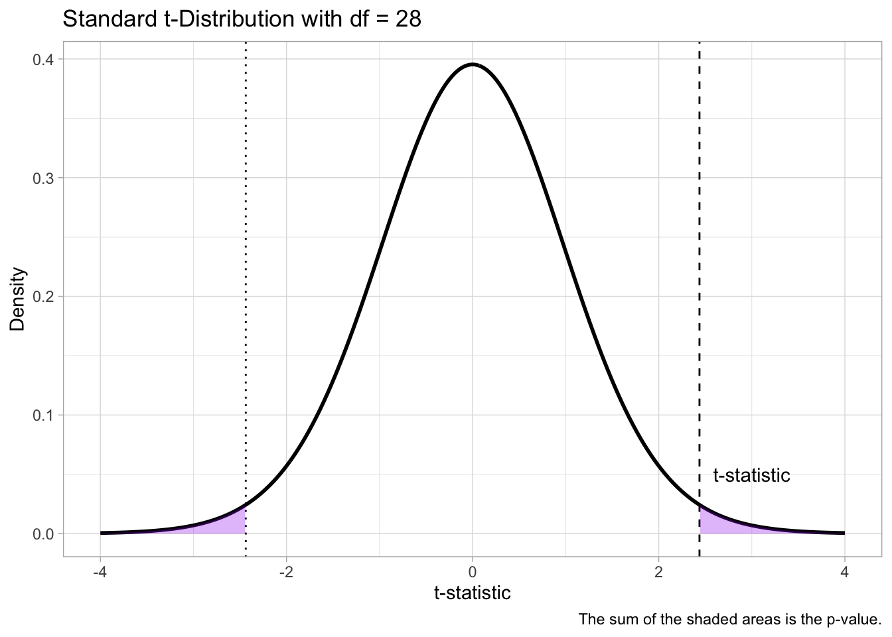

set.seed(2953)
# Vowel duration before voiceless consonants
vdur_vls <- rnorm(15, mean = 80, sd = 10)
vdur_voi <- rnorm(15, mean = 90, sd = 10)30 Frequentist statistics, the Null Ritual and p-values


In Chapter 20, you were introduced to two approaches to inference: frequentist and Bayesian statistics. You have encountered the p-value. It is very likely that you had heard of p-values before, especially when reading research literature. You will have also heard of “statistical significance”, which is based on the p-value obtained in a statistical test performed on data. This section will explain what p-values are, how they are often misinterpreted and misused (Cassidy et al. 2019; Gigerenzer 2004) , and how the “Null Ritual”, a degenerate form of statistics derived from different frequentist frameworks (yes, you can frequentist statistics in different ways!) that has become the standard in research, despite not being a coherent way of doing frequentist statistics (Gigerenzer, Krauss, and Vitouch 2004).
Most of current research is carried out with frequentist methods. This is a historical accident, based on both an initial misunderstanding of Bayesian statistics (which is, by the way, older than frequentist statistics) and the fact that frequentist maths was much easier (and personal computers did not exist).
The commonly accepted approach to frequentist inference is the so-called Null Hypothesis Significance Testing, or NHST. As practised by researchers, the NHST approach is a (sometimes incoherent) mix of the frequentist work of Fisher on one hand, and Neyman and Pearson on the other. The inconsistent nature of NHST as practised by researchers today has led to the elaboration of the concept and label “Null Ritual” (Gigerenzer 2004, 2018; Gigerenzer, Krauss, and Vitouch 2004) and the slogan-titled paper The difference between “significant” and “not significant” is not itself statistically significant (Gelman and Stern 2006). The Null Ritual has been criticised by frequentist and Bayesian statisticians alike and has resulted in the proposal of alternative, stricter, versions of NHST, like Statistical Inference as Severe Testing (SIST, Mayo 2018; for a critique see Gelman et al. 2019).
The main tenet of the Null Ritual is that you set a null hypothesis and you try to reject it. A null hypothesis is, in practice, always a nil hypothesis: in other words, it is the hypothesis that there is no difference between two estimands (these usually being means of two or more groups of interest). Using a variety of numerical techniques, one obtains a p-value, i.e. a frequentist probability. The p-value is used for inference: if the p-value is smaller than a threshold, one can reject the nil hypothesis; if the p-value is equal to or greater than the threshold, you cannot reject the null hypothesis. p-values are very commonly mistaken for Bayesian probabilities (Cassidy et al. 2019) and this results in various misinterpretations of reported results.
30.1 The p-value
To illustrate p-values, we will compare simulated durations of vowels when followed by voiceless consonants vs voiced consonants. It is a well-known phenomenon that vowels followed by voiced consonants tend to be longer than vowels followed by voiceless ones (see review in Coretta 2019). Let’s simulate some vowel duration observations: we do so with the rnorm() function, which takes three arguments: the number of observations to sample and the mean and standard deviation of the Gaussian distribution to sample observations from. We use a \(Gaussian(80, 10)\) for durations before voiceless consonants, and a \(Gaussian(90, 10)\) for durations before voiced consonants. In other word, there is a difference of 10 milliseconds between the two means. Since the rnorm() function randomly samples from the given distribution, we have set a “seed” so that the code will return the same numbers every time it is run, for reproducibility.
Normally, you don’t know what the underlying means are, we do here because we set them. So let’s get the sample mean of vowel duration in the two conditions, and take the difference.
mean_vls <- mean(vdur_vls)
mean_voi <- mean(vdur_voi)
diff <- mean_voi - mean_vls
diff[1] 7.43991The difference in the sample means is about 7.4. Now, a frequentist statistician would define the following two hypotheses:
\(H_0\): the difference between means is 0.
\(H1\): the difference between means is greater than 0.
\(H_0\) simply states that there is no difference between the mean of vowel duration when followed by voiced or voiceless consonants. This is the “null” hypothesis. For \(H_1\), we decide to go with “greater than 0” because we know about the trend of longer vowels before voiced consonants, so the difference should be positive. This is called the “alternative” hypothesis.
Here is where things get tricky: if \(H_0\) is correct, then we should observe a difference as close to 0 as possible. Why not exactly 0? Because it is impossible for two samples (even if they come exactly from the same distribution) to have exactly the same mean for the difference to be 0. But how do we define “as close as possible”? The frequentist solution is to define a probability distribution of the difference between means centred around 0. This means that 0 has the highest probability, but that negative and positive differences around 0 are also possible.
William Sealy Gosset, a statistician, chemist and brewer who worked for Guinness, the brewery, has proposed the t-distribution (also called the Student-t distribution, from Gosset’s pseudonym “Student”) as an appropriate probability distribution for differences between means. The t-distribution is similar to a Gaussian distribution, but the probability on either side of the mean declines more gently than with the Gaussian. As the Gaussian, the t-distribution has a mean and a standard deviation. It has an extra parameter: the degrees of freedom, or \(df\). The \(df\) affect how quickly the probability declines moving away from zero: the higher the \(df\) the more quickly the probability gets lower. This is illustrated in Figure 30.1. The figure shows four different t-distributions: what they all have in common is that the mean is 0 and the standard deviation is 1. These are called “standard” t-distributions. Where they differ is in their degrees of freedom. When the degrees of freedom are infinite (Inf), the t-distribution is equivalent to a Gaussian distribution.
# Degrees of freedom to compare
dfs <- c(1, 2, 5, Inf)
# Create data
data <- tibble(df = dfs) |>
mutate(data = map(df, ~ {
tibble(
x = seq(-4, 4, length.out = 500),
y = if (is.infinite(.x)) dnorm(seq(-4, 4, length.out = 500))
else dt(seq(-4, 4, length.out = 500), df = .x)
)
})) |>
unnest(data)
# Plot
ggplot(data, aes(x = x, y = y, color = as.character(df))) +
geom_line(linewidth = 1) +
labs(
title = "t-Distributions",
x = "t-statistic", y = "Density",
color = "DFs"
) +
scale_color_brewer(palette = "Set1")

Why mean 0 and standard deviation 1? Because we can standardise the difference between the two means and always use the same standard t-distribution, so that the scale of the difference doesn’t matter: we could be comparing milliseconds, or Hertz, or kilometres. To standardise the difference between two means, we calculate the t-statistic. The t-statistic is a standardised difference. Here’s the formula:
\[ t = \frac{\bar{x}_1 - \bar{x}_2}{\sqrt{\frac{s_1^2}{n_1} + \frac{s_2^2}{n_2}}} \]
\(t\) is the t-statistic.
\(\bar{x}_1\) and \(\bar{x}_2\) are the sample means of the first and second group (the order doesn’t really matter).
\(s^2_1\) and \(s^2_2\) are the variance of the first and second group. The variance is simply the square of the standard deviation (expressed with \(s\) here).
\(n_1\) and \(n_2\) are the number of observations for the first and second group (sample size).
We have the means of vowel duration before voiced and voiceless consonants and we know the sample size (15 observations per group), so we just need to calculate the variance.
var_vls <- sd(vdur_vls)^2 # also var(vdur_vls)
var_voi <- sd(vdur_voi)^2 # also var(vdur_voi)
tstat <- (mean_voi - mean_vls) / sqrt((var_voi / 15) + (var_vls / 15))
tstat[1] 2.437442So the t-statistic for our calculated difference is 2.4374424. The frequentist statistician would then ask: what is the probability of finding a t-statistic (and a difference) this large or larger, assuming that the t-statistic (and the difference) is 0. This probability is the p-value. You should note two things:
First, the part about the real difference being 0. This is \(H_0\) from above, our null hypothesis that the difference is 0. For a p-value to work, we must assume that \(H_0\) is true. Otherwise, the frequentist machinery does not work.
Another important aspect is the “difference this large or larger”: due to how probability density function works (i.e. functions to obtain probabilities of continuous variables), we cannot obtain the probability of a specific value, but only the probability of an interval of values. The frequentist story goes that, if \(H_0\) is true, you should not get very large differences, let alone larger differences than the one found.
The next step is thus to obtain the probability of \(t \geq\) 2.4374424 (t being equal or greater than 2.4374424), given a standard t-distribution. Before we can do this we need to pick the degrees of freedom of the distribution, because of course these affect the probability. The degrees of freedom are calculated based on the data with the following, admittedly complex, formula:
\[ \nu = \frac{\left( \frac{s_1^2}{n_1} + \frac{s_2^2}{n_2} \right)^2}{\frac{\left( \frac{s_1^2}{n_1} \right)^2}{n_1 - 1} + \frac{\left( \frac{s_2^2}{n_2} \right)^2}{n_2 - 1}} \]
df <- ( (var_voi/15 + var_vls/15)^2 ) /
( ((var_voi/15)^2 / (15 - 1)) + ((var_vls/15)^2 / (15 - 1)) )The degrees of freedom for our data are approximately 28. Figure 30.2 shows a t-distribution with those degrees of freedom and a dashed line where our t-statistic falls. The shaded purple area marks the area under the probability curve with t values equal or greater than the obtained t-statistic. The size of this area is the probability that we get a t value equal or greater than the obtained t-statistic. This probability is the p-value!
# Create data
data <- tibble(df = df) |>
mutate(data = map(df, ~ {
tibble(
x = seq(-4, 4, length.out = 500),
y = if (is.infinite(.x)) dnorm(seq(-4, 4, length.out = 500))
else dt(seq(-4, 4, length.out = 500), df = .x)
)
})) |>
unnest(data)
# Plot
ggplot(data, aes(x = x, y = y)) +
geom_line(linewidth = 1) +
geom_vline(xintercept = tstat, linetype = "dashed") +
geom_area(
data = subset(data, x >= tstat),
aes(x = x, y = y),
fill = "purple", alpha = 0.3
) +
labs(
title = glue::glue("Standard t-Distribution with df = {round(df)}"),
x = "t-statistic", y = "Density",
)

You can get the p-value in R using the pt() function. You need the t-value and the degrees of freedom. These are saved in tstat and df from previous code. We also need to set another argument, lower.tail: this argument states whether we want the probability of getting a t value that is equal or less than the specified t value, but we want the probability of getting a t value that is equal or greater than the specified t value, so we set lower.tail to FALSE.
pvalue <- pt(tstat, df, lower.tail = FALSE)
pvalue[1] 0.01075221In other words, assuming \(H_0\) is true and there is not difference between the two groups of vowel duration, the probability of obtaining a t-statistic greater or equal to 2.4374424 is approximately 0.01. In other words, there is approximately a 1% probability that the difference between durations of vowels followed by voiced or voiceless consonants is 7.4399103 or larger. Of course, we want the p-value to be as small as possible: if \(H_0\) is true and the true difference is 0, finding a large difference should be very unlikely (think about the t-distribution: values away from 0 are less likely than 0 and values closer to 0).
But how do we decide how small is small enough? Is 1% small enough? What about 0.5%? 5%?, maybe 10%? This is the so-called \(\alpha\)-level (read “alpha level”, from the Greek letter \(\alpha\)). We will get back to the issue of setting an \(\alpha\)-level in the next section, but for now now that in social research it has become standard to set it to 0.05. In other words, if the p-value is lower than \(\alpha = 0.05\) then we take the p-value to be small enough, otherwise we don’t. When the p-value is smaller than 0.05, we say we found a statistically significant difference, when it is equal or greater than 0.05, we say we found a statistically non-significant difference. When we find a statistical significant difference, the frequentist story goes, we say that we reject the null hypothesis \(H_0\). In our simulated example of vowel duration, the p-value is smaller than 0.05, so we say the mean vowel durations before voiced vs voiceless consonants are (statistically) significantly different from each other.
30.2 The “Null Ritual”
XXX
30.3 Why prefer Bayesian inference?
Here are a few practical and conceptual reasons for why Bayesian statistics might be more appropriate in most research contexts.
Of course, there are merits in fitting frequentist models, for example in corporate decisions, but you’ll still have to do a lot of work. The main conceptual difference then is that frequentist and Bayesian regression models answer very different questions and as (basic) researchers we are generally interested in questions that the latter can answer and the former cannot.